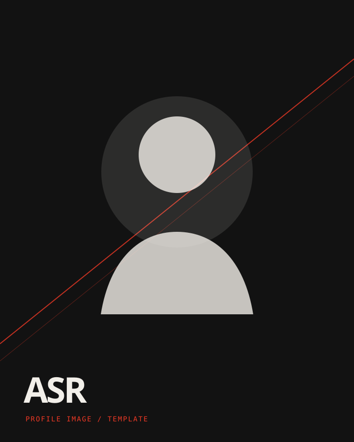

01 / MAGANG
PENGALAMAN KERJA
Frontend Developer
Intern.
PT. CyberIndoMediaUtama
DURASI 5 BULAN / MARET—AGUSTUS
PORTOFOLIO / 2026
OPEN TO WORK · INDONESIA
FRONTEND
DEVELOPER

Membantu bisnis dan personal brand tampil profesional di web — dari company profile, landing page UMKM, hingga aplikasi mobile.
JELAJAHI PORTOFOLIOCV ↓Saya adalah frontend developer yang fokus pada kualitas detail, desain yang berani, dan pengalaman pengguna yang intuitif. Saya membantu bisnis melalui website company profile, landing page UMKM, aplikasi mobile, dan personal portfolio.
PENGALAMAN KERJA
PT. CyberIndoMediaUtama
DURASI 5 BULAN / MARET—AGUSTUS
S1 Sistem Informasi
Universitas Bina Sarana Informatika
PORTOFOLIO PRIBADI / 2026
01 / STUDI KASUSWebsite ini memperkenalkan kemampuan frontend, pengalaman, dan layanan Adi dalam satu halaman untuk recruiter serta calon klien.
PUNYA IDE BISNIS?